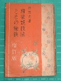

「はやししげみつ」ではなく、林茂光（りん もこう）と読む。本名・鈴木郭郎（すずきひろお）を鈴（りん）木郭郎（もこう）と音読みし、雀名としたもの。
日本麻雀草創期の大先達で、今日、牌聖と称される。
静岡県沼津に生まれた。東洋協会大学(現在の拓殖大学)卒業。大正初期より華北の天津にある中国物産公司に勤務。雑貨貿易に携わる内、麻雀と親しむ。大正11年頃、天津から帰国。新宿四谷南寺町に居住し、日本蟹缶詰組合に勤務した。
大正12年、関東大震災が発生。そのため銀座にあったカフェー「プランタン」が新宿区牛込神楽坂で仮営業することになった。プランタンの店主、松山省三氏は著名な画家、妻の松井潤子氏も女優という関係で、プランタンには画家・俳優はもとより多くの文人が出入りした。そしてプランタンで、当時ようやく日本に伝来した麻雀を楽しんだ。
とはいえ麻雀は伝来したばかりであり、ルールも渾然としていた。このプランタンへ画家、多賀谷信乃氏の紹介で鈴木郭郎氏が顔を出し、麻雀をＡＢＣから指導した。これを世にプランタン時代と称す。後年、このとき指導を受けたメンバーが日本麻雀界の指導者となった。
大正十三年七月、台東区浅草の下方屋(加留多・玩具等の卸問屋)が骨牌税が不要な麻雀牌の輸入を企画した。この宣伝用を兼ね、林茂光氏が麻雀入門書「支那骨牌・麻雀」(新書判)を上梓した。これが日本国内における最初の麻雀入門書である。

＃日本語による麻雀入門書は、海外を含めれば、大正６年12月１日、肖閑生が上海で出版した「麻雀詳解」、同じく井上紅梅が上海において刊行した「支那風俗」の中で麻雀の遊び方を紹介したのが日本語文献の最初。
この「支那骨牌・麻雀」は表紙が赤色であったため、通称、赤本と呼ばれ、10万部を越すベストセラーとなった（一説にこの赤本は氏が中国物産公司勤務時代、麻雀牌を売るために著したPR誌が下地になっているという）。
昭和４年、日本麻雀連盟(会長・空閑緑)が結成されると同時に、当時の最高段位である５段位を認定される。
昭和５年11月、神田駿河台下の四六書院(三省堂の分身)より「麻雀競技法とその秘訣」を上梓した。

この本も「支那骨牌・麻雀」に劣らずベストセラーとなったが、単にその時代におけるベストセラーではない。この本は、上梓から70年経った現在においても、麻雀学上、重要な文献資料である。
林茂光氏はその後も林茂光麻雀研究所を設立、機関誌を発行し、麻雀の研究に大貢献した。
戦後は静岡県沼津に隠棲したが、その後、北海道に転居。享年不詳。
|